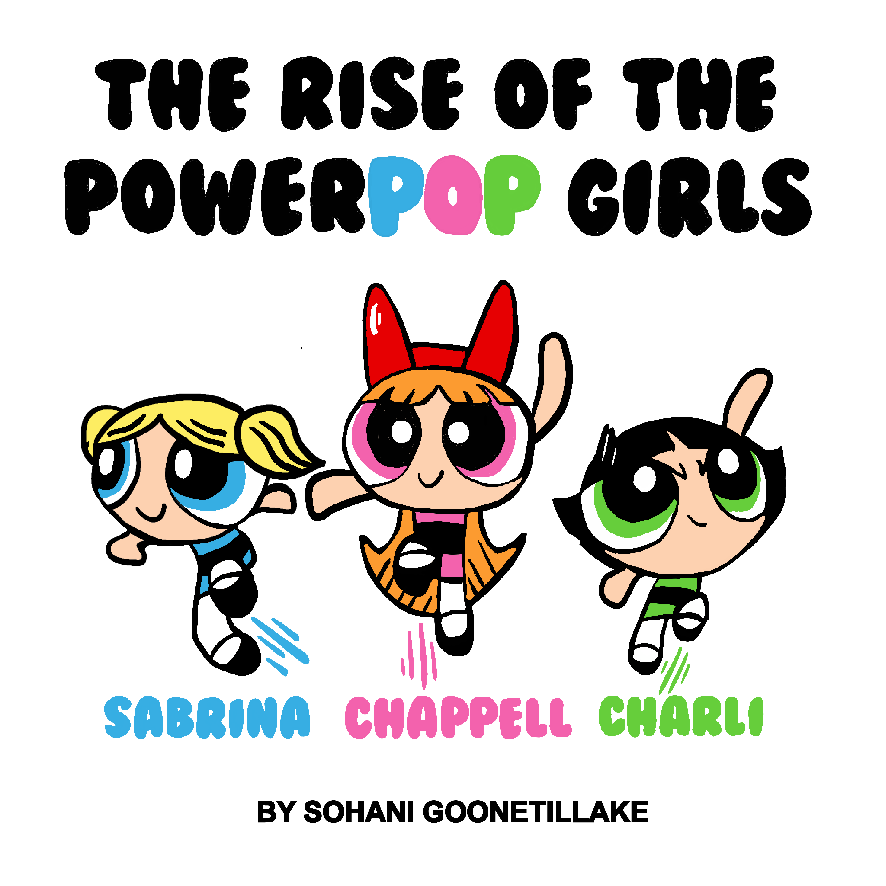

Sabrina Carpenter, Chappell Roan and Charli XCX are dominating the pop music zeitgeist after years in the trenches of the music industry.
Their domination is particularly impressive considering veteran A-listers like Taylor Swift, Beyoncé, Ariana Grande, Dua Lipa and Billie Eilish have all released new music this year.
It can be difficult to fathom their virality or chart their successes, so we've done that for you!
So why are all these talented young women finally coming out of the woodwork now? The LA Times has speculated that the COVID-19 pandemic prevented record labels from being able to elevate young acts and this is simply “a course correction for a music industry that’s been starved for new superstars”.
Regardless of the reason, the rise of "The Power Pop Girls" shows that young women are currently thriving in the pop music industry and are paving the way for other aspiring musicians.